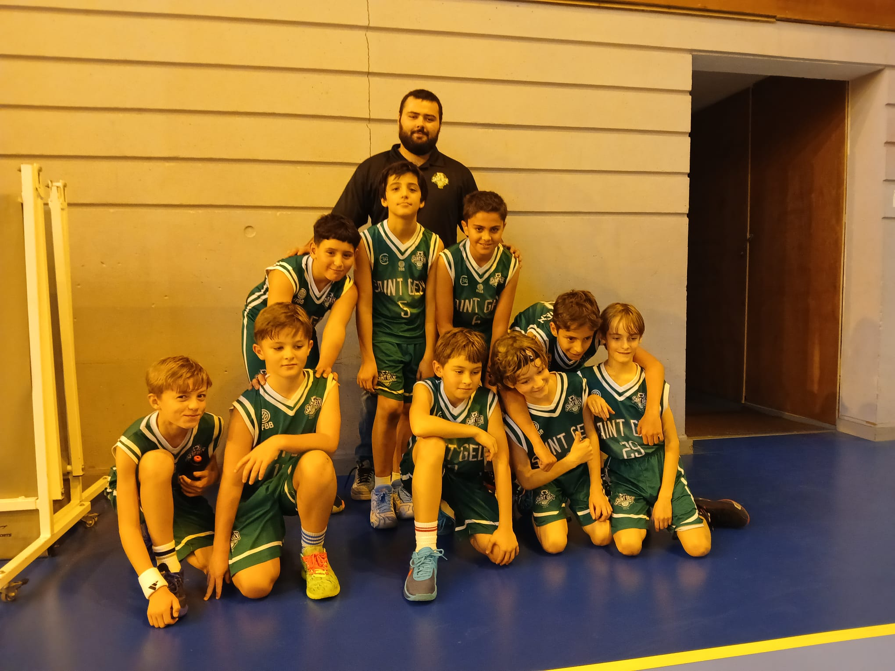
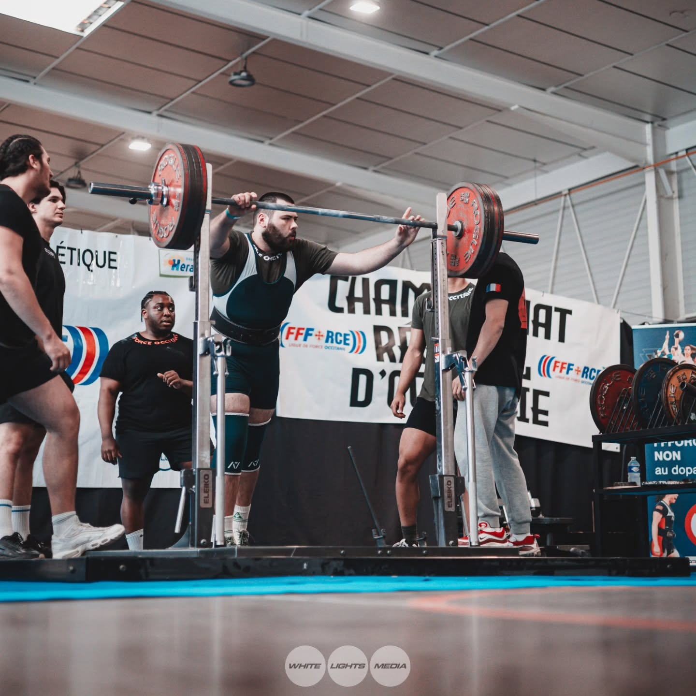

Je m'appelle Rémi Soulier, j'ai 21 ans et je suis étudiant en BTS SIO (Services Informatique aux Organisations) au sein de l'école My Digital School. Je réalise mon bts en alternance au sein du service informatique de la Communauté de Communes du Grand Pic St Loup. Dans le cadre de mon BTS SIO, j'ai choisi l'option SLAM (Solutions Logicielles et Applications Métiers) qui me permet de me spécialiser dans le développement d'applications.
J'ai toujours été passionné par l'informatique et les nouvelles technologies et c'est pour cela que j'ai choisi de m'orienter dans ce domaine. J'ai déjà réalisé plusieurs projets personnels et professionnels qui m'ont permis de développer mes compétences en développement web et mobile.
Plan du site
Centres d'intérêt
Basketball

Depuis plus de 10 ans, je pratique le basketball au sein du club du Saint Gély Baskeball. Durant mes années de pratique, j'ai eu l'occasion de participer à de nombreux tournois et compétitions à des niveaux variés. En parallele, j'ai également passé des diplomes d'entraineur pour coacher des équipes de jeunes pour m'investir pleinement au sein du club. Ces experiences m'ont permis de développer des compétences en travail d'équipe, en leadership et en gestion du stress.
Force Athlétique
Depuis 3 ans, je pratique la force athlétique en competition. La force athletique est une discipline de musculation qui consiste à soulever des charges lourdes dans trois exercices : le squat, le développé couché et le soulevé de terre. Ce sport m'a permis d'apprendre à etre discipliné, à me fixer des objectifs à court et long terme et à persévérer pour les atteindre.
